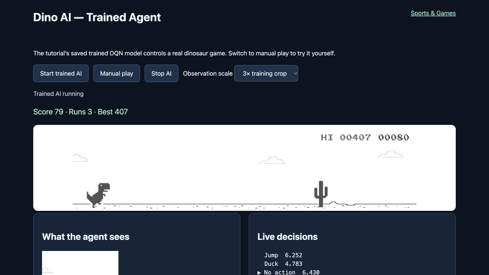

Saved DQN model
A saved learning model supplies decisions during the running game. Live inference connects the model’s output to visible behavior in the browser.
Python · ONNX Runtime · JavaScript
The saved DQN model controls the dinosaur game with live browser inference.
A saved learning model supplies decisions during the running game. Live inference connects the model’s output to visible behavior in the browser.
A saved learning model supplies decisions during the running game. Live inference connects the model’s output to visible behavior in the browser.
Agent behavior turns a rule or destination into visible movement. Observing the actors makes it possible to understand how a change in the scene affects their next action.
